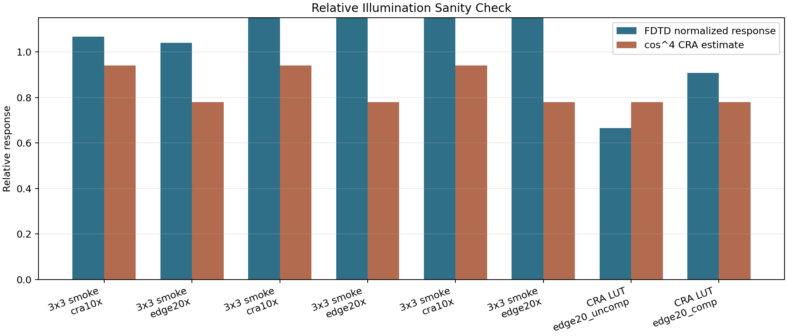
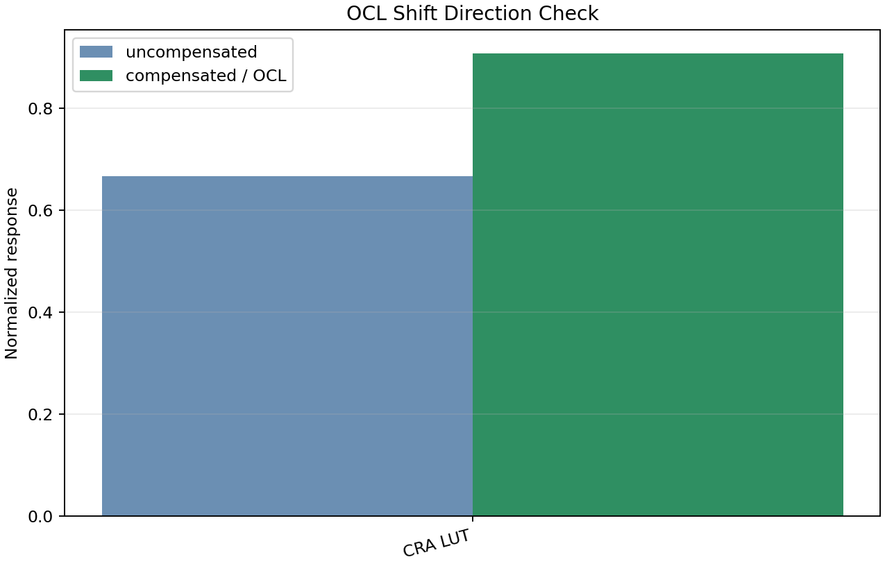
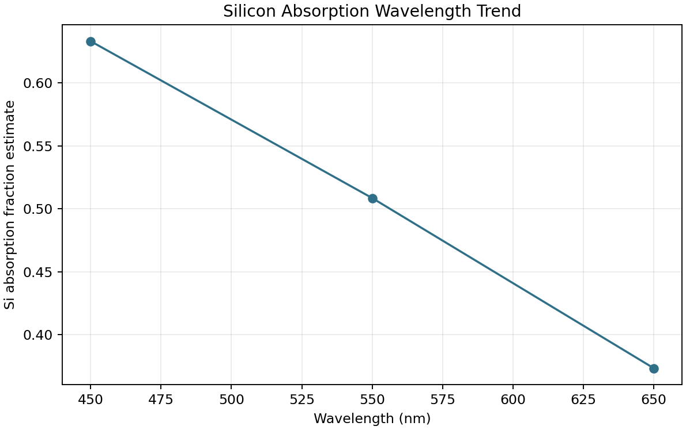
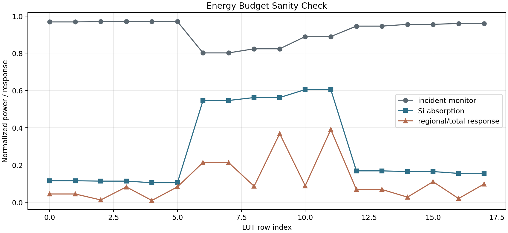
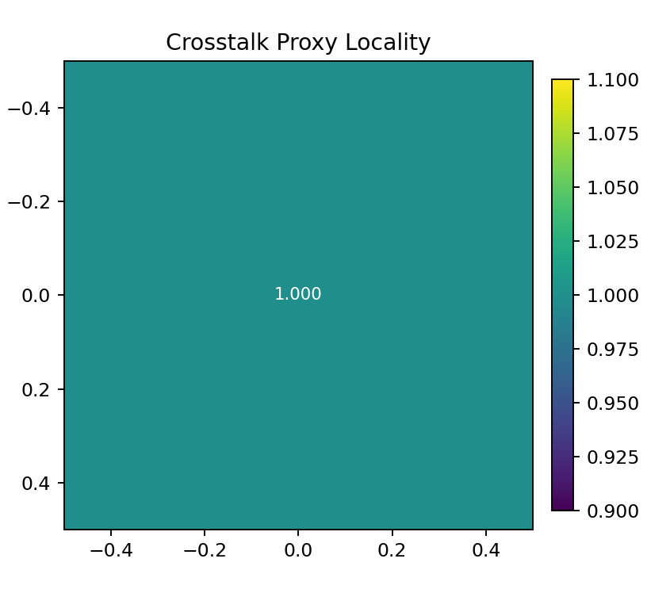

FDTD Sensor Physics Validation Report
This report checks whether the FDTD-informed sensor outputs are physically plausible, not just whether software integration runs.
Executive Verdict
Interpretation: the current 3x3 smoke LUT is good enough to verify the data path, but not good enough to claim product-grade physical crosstalk or OCL improvement. The separate CRA LUT shows the expected compensation improvement, while the 3x3 smoke LUT does not.
Source Data
| Primary LUT | /Users/seongcheoljeong/FDTD/runs/convergence_cra3_rgb_r84_gridsnap_quant/camera_lut.json |
|---|---|
| CRA LUT | /Users/seongcheoljeong/FDTD/runs/cra_response_lut/cra_response_lut.csv |
| Absorption sweep | /Users/seongcheoljeong/FDTD/runs/meep_pixel_absorption_sweep.csv |
Validation Table
| Check | Status | Detail |
|---|---|---|
| primary energy | PASS | none |
| primary relative_illumination | WARN | edge20x response exceeds bare cos^4 by >20%; this can be valid with microlens/OCL concentration but needs calibration evidence; cra10x response exceeds bare cos^4 by >20%; this can be valid with microlens/OCL concentration but needs calibration evidence; edge20x response exceeds bare cos^4 by >20%; this can be valid with microlens/OCL concentration but needs calibration evidence; cra10x response exceeds bare cos^4 by >20%; this can be valid with microlens/OCL concentration but needs calibration evidence; edge20x response exceeds bare cos^4 by >20%; this can be valid with microlens/OCL concentration but needs calibration evidence |
| primary ocl_shift | WARN | no uncompensated/compensated OCL pair available |
| primary wavelength | PASS | none |
| primary symmetry | WARN | no +/- CRA mirror pairs available for symmetry validation |
| primary crosstalk | WARN | no regional crosstalk kernel available |
| primary convergence | WARN | FDTD report is grid-qualified but not full resolution/time/PML convergence |
| CRA LUT OCL shift | PASS | none |
Relative Illumination vs cos^4
The cos^4 curve is a first-order reference. FDTD may be lower because of stack, aperture, and absorption losses, but large excess over cos^4 or unexplained severe loss should be investigated.

OCL Shift Direction
A correct OCL compensation should usually improve edge response versus uncompensated geometry. The current 3x3 smoke LUT fails this direction check, while the CRA response LUT passes.

Wavelength Trend
For the simple pixel stack sweep, Si absorption decreases from blue to red in the available 450/550/650 nm data. This is directionally plausible.

Energy Budget
Responses should be non-negative and bounded by incident/absorbed power conventions. This plot exposes gross conservation failures.

Crosstalk Locality
The current 3x3 smoke regional-response kernel is nearly uniform. That is a warning: it should not be treated as a localized crosstalk PSF without a better source/collection experiment.

Required Improvement Before Product Use
Generate a product-grade LUT with convergence sweeps, signed CRA pairs, field/corner sweep, wavelength sweep, and a localized optical crosstalk source experiment. If photodiode collection physics is required, add TCAD or a calibrated compact collection model.